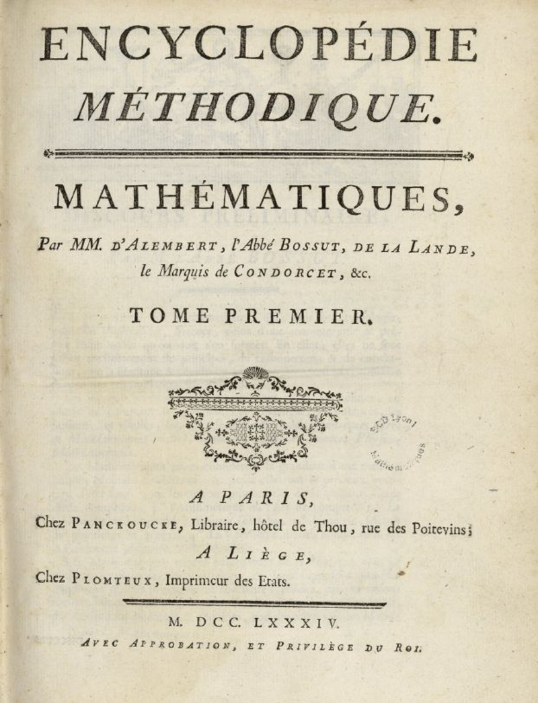

Menu
Introduction
L'histoire épistémologique de la géographie est riche et complexe, marquée par l'évolution des idées, des méthodes et des approches au fil du temps. Epigéo a réalisé une synthèse qui vulgarise les éléments incontournables de la géographie. Si tu veux creuser, n'hésite pas à visiter notre bibliographie :)
La dalle de Saint-Bélec
La pierre gravée que vous voyez ci-dessous est considérée depuis peu comme la première représentation cartographique produite par les hommes en Europe occidentale.
Elle daterait de l’âge du Bronze ancien, soit entre 2150 et 1600 ans avant notre ère et a été retrouvé en Bretagne !

Tu veux en savoir plus sur la dalle ou on Saint-Bélec ?
Les prémices de la cartographie
La première carte babylonienne connue, souvent considérée comme l'une des premières cartes du monde, est la
"Carte du Monde de Sargon" ou la "Carte du Monde de Sargon d'Akkad". Elle date d'environ 2300 av. J.-C. et a
été créée pendant le règne du roi Sargon d'Akkad en Mésopotamie.
La carte est gravée sur une tablette d'argile, une pratique courante à l'époque en Mésopotamie. Ces
tablettes étaient souvent utilisées pour enregistrer des informations importantes.
Elle représente une version stylisée du monde connu à l'époque. Les détails géographiques sont simplifiés,
et la carte se concentre principalement sur la région de la Mésopotamie, centrée sur la ville d'Akkad, la
capitale de l'empire de Sargon., Elle est orientée vers l'est, avec le nord en haut. La Mésopotamie est
représentée comme une zone centrale entourée par des montagnes et des cours d'eau. Des villes et des régions
importantes de l'empire de Sargon sont également identifiées.
Certains chercheurs estiment que la carte avait également une signification religieuse, représentant
peut-être une vision cosmologique du monde liée aux croyances de l'époque.
Toutefois, la précision géographique de cette carte est limitée par rapport aux normes modernes, et elle
offre plutôt une représentation symbolique du monde tel que le percevaient les habitants de la Mésopotamie à
cette époque. Néanmoins, elle demeure une pièce précieuse d'histoire cartographique, témoignant des
premières tentatives humaines de représenter et de comprendre l'espace géographique qui les entoure.
L'Antiquité
Il est vrai que la discipline de la géographie en tant que telle n'a pas encore vu le jour à l'antiquité. Toutefois, c'est une période charnière dans la construction des savoirs scientifiques. Si connaissance des territoires est partielle et héritée en large partie des récits oraux, les travaux de grands savants ont permis de jeter les bases pour les générations futures. La quasi-totalité des productions cartographique au Moyen Age sont très largement inspirées de penseurs antiques.
Thalès, Hérodote et Strabon en sont de bons exemples. Hérodote, souvent considéré comme le père de l'histoire et parfois même de la géographie, a également contribué
à la
géographie en décrivant les peuples, les lieux et les cultures. Claude Ptolémée, érudit dans de nombreux savoirs, avait une connaissance fine (pour l'époque) de la méditerrannée et de ses alentours.
Cela a permis à Nicolaus Germanus en 1482, de produire un planisphère très fidèle de la réalité Européenne.
Période médiévale
Pendant le Moyen Âge, la géographie était souvent liée à la théologie et à la cartographie.
Les cartes médiévales étaient souvent symboliques plutôt que des représentations précises de la réalité
géographique.
Les cartographies de cette période reflètent les croyances, les connaissances et les pratiques
cartographiques de l'époque et les orientations sont variées. En effet, selon les pays et les régions du
globe, l’orientation nord-sud, communément appliquée de nos jours, n’était pas une norme. Certaines cartes
étaient orientées avec l'est en haut (orientées à l'Est), reflétant l'idée religieuse de Jérusalem comme
centre du monde. Le symbolisme religieux à toujours imprégné l’iconographie des cartes médiévales, en
témoigne la place souvent centrale de Jérusalem l’inclusion presque omniprésente de représentations de
scènes bibliques. Les cartes du monde étaient parfois dessinées sous la forme de T-O, avec le monde
représenté comme un cercle (orbis) divisé en trois parties par un T, symbolisant les trois continents connus
à l'époque : l'Europe, l'Asie et l'Afrique.
Cartes itinéraires : Plutôt que des cartes géographiques complètes, de nombreuses cartes médiévales étaient
des cartes itinéraires destinées à aider les voyageurs dans leurs déplacements. Elles indiquaient souvent
des routes, des villes importantes et des points de repère plutôt que de représenter fidèlement la
géographie.
La connaissance géographique étant limitée, les cartographes ne faiseint pas preuve de rigueur scientifique
(absence de coordonnées géographiques, pas de latitudes et longitude) mais davantage de fantaisie et de
créativité, telle que la représentation de monstres marins, des créatures mythiques et de détails
décoratifs. Ces éléments étaient souvent utilisés pour remplir des espaces inexplorés ou inconnus.
Enfin, souvent connotées, certaines cartographies faisaient état d’une hiérarchie sociale entre les
individus, faisant figurer les personnalités les plus puissantes de l’époque.
La renaissance
La Renaissance a apporté un regain d'intérêt pour les sciences et a influencé la géographie. Des
explorateurs comme Christophe Colomb et Vasco de Gama ont élargi les horizons, tandis que des penseurs comme
Ptolémée ont contribué à la cartographie.
La géographie a connu une transformation significative, à travers une nouvelle ère de découvertes et
d'innovations dans la représentation du monde. La redécouverte des travaux de Ptolémée a marqué le début
d’une révolution cartographique, réintroduisant l’utilisation de coordonnées géographiques et de méthodes de
représentation de la Terre sur des cartes planes. C’est l'Atlas de Ptolémée qui a servi de point de départ à
une exploration renouvelée de la cartographie.
L'influence de Gerardus Mercator a été déterminante à cette époque.
Sa projection cylindrique conforme, connue sous le nom de projection de Mercator, a révolutionné la
cartographie en facilitant la navigation maritime.
Son atlas, publié en 1595, a établi de nouvelles normes, mettant en lumière une précision cartographique
accrue et une représentation détaillée des terres
découvertes au cours des explorations.
(Mercator est décrit comme l’inventeur du GPS pour les marins, il met en place une mappemonde en 18
feuillets appelée "projection Mercator" qui fournit aux navigateurs une réelle description des contours des
terres)
Au-delà de l'aspect technique, la Renaissance a vu la cartographie se lier étroitement à l'art.
Certains cartographes, tels que Mercator lui-même, étaient également des artistes renommés, conférant aux
cartes une esthétique soignée. Ces représentations artistiques ont ajouté une dimension visuelle à la
cartographie, transcendant son rôle purement utilitaire.
L'époque a également été marquée par des avancées dans la précision des cartes, avec les cartographes
intégrant des informations plus précises sur la géographie des régions. Les découvertes géographiques des
explorateurs ont été soigneusement documentées sur les cartes, élargissant ainsi la vision du monde.
Toutefois, une des critiques principales de la période Renaissance concerne
l'ethnocentrisme et l'eurocentrisme omniprésents dans les représentations cartographiques de l'époque.
Les cartes tendaient à placer l'Europe au centre, déformant la taille et l'importance d'autres régions du
monde,
reflétant ainsi les préjugés culturels caractéristiques de la Renaissance. De plus, malgré le renouveau
intellectuel de la Renaissance,
les contributions des explorateurs et des savants arabes, chinois, et d'autres cultures, leurs apports à la
connaissance géographique ont souvent
été sous-estimées ou ignorées, contribuant à une vision simplifiée et stéréotypée du monde.
Connais-tu les portulans ?
Le siècle des lumières
Siècles des Lumières :
Au XVIIIe siècle, les philosophes des Lumières ont commencé à examiner les relations entre la géographie et
le climat, jetant ainsi les bases de la géographie physique.
Le siècle des lumières a été une période de progrès intellectuels considérables, où l'encyclopédie
universelle a joué un rôle central dans la diffusion et la systématisation du savoir. La géographie, en tant
que discipline en plein essor, y a trouvé sa place, symbolisant de fait, une nouvelle ère pour cette
science.
L'Encyclopédie, ambitieux projet, dirigé par Denis Diderot et Jean le Rond d'Alembert visant à rassembler et
à organiser les connaissances contemporaines, a introduit pour la première fois la géographie comme une
branche des mathématiques, formalisant sa légitimation en tant que discipline à part entière.
Les articles lui étant consacré vont au-delà d’une compilation de données topographiques en inculant des
considérations plus larges sur les relations qu’entretiennent les hommes avec leur environnement, la
cartographie, les explorations et les découvertes récentes. Ces entrées ont contribué à élargir la
perception de la géographie au-delà de la simple description des lieux pour englober des éléments tels que
la démographie, les ressources naturelles, et les dynamiques sociales et économiques.

L'introduction de la géographie dans l'Encyclopédie pendant le siècle des Lumières symbolise une
reconnaissance institutionnelle de la discipline en tant que composante essentielle des connaissances
savantes. Cela a contribué à la diffusion d'idées géographiques nouvelles et à la légitimation de la
géographie en tant que champ d'étude distinct et respecté.
Au cœur du XVIIe siècle, les ingénieurs du roi Louis XIV sont des acteurs centraux dans le domaine de la
cartographie militaire. Leur expertise, mêlant habilement compétences techniques, artistiques et
géographiques, trouve son apogée dans la production de cartes précises et esthétiques, conçues pour répondre
aux exigences stratégiques des campagnes militaires de Louis XIV. Ce métier complexe impliquait
l'utilisation de sources diverses, allant des relevés de terrain aux cartes existantes, et faisait appel à
des techniques sophistiquées de mesure, de dessin et d'annotation.
L'illustre famille Cassini
Outre leur utilité stratégique évidente, ces cartes militaires du XVIIe siècle remplissaient
des fonctions bien plus étendues. Au-delà de la planification tactique, elles devenaient des outils de
communication, de propagande et des témoignages graphiques destinés à conserver la mémoire des exploits
militaires. La polyvalence de ces cartes révèle ainsi leur impact profond sur les sphères politique,
militaire et culturelle de l'époque.
Nombreux sont les philosophes et scientifiques qui s’emparent des prémices d’un raisonnement géographique.
Montesquieu, à travers son œuvre "L'Esprit des lois", a établi des liens essentiels entre la géographie
physique et humaine, explorant l'influence du climat et de la géographie sur le développement des sociétés.
De même, Buffon, avec son Histoire naturelle, a élargi la perspective géographique en examinant la diversité
des espèces et en soulignant les variations géographiques. Alexander von Humboldt, personnage emblématique
du siècle des lumières, a révolutionné la géographie en introduisant une approche interdisciplinaire. Son
Voyage aux régions équinoxiales du Nouveau Continent a transcendé les frontières entre la géographie
physique, la botanique, la climatologie et les sciences humaines, posant ainsi les bases de la géographie
moderne.
Quel rapport entre la géo et les maths ?
Le XIXème siècle
L'époque moderne de la géographie a été marquée par l'émergence de deux branches principales : la géographie
physique, axée sur l'étude des caractéristiques naturelles de la Terre, et la géographie humaine, centrée
sur
les activités humaines et les sociétés.
Au XIXe siècle, le paysage intellectuel de la discipline a été le théâtre de débats passionnés entre deux
écoles
de pensée : les déterministes et les possibilistes.
Ces perspectives opposées ont cristallisé les discussions
sur la manière d'appréhender la relation complexe entre l'environnement physique et les activités humaines.
D'une part, les déterministes, incarnés par des figures telles que Friedrich Ratzel, postulaient une
influence
directe et contraignante de la nature sur les sociétés humaines. De l'autre, les possibilistes, dont Paul
Vidal
de la Blache était un éminent représentant, contestaient cette conception déterministe, soulignant la
capacité
des sociétés à exercer une influence significative sur leur environnement.
Ces conflits intellectuels ont mis en lumière les tensions entre les forces naturelles et les choix humains
dans
le développement spatial. Les déterministes soulignaient la primauté des contraintes physiques, tandis que
les
possibilistes insistaient sur la flexibilité et la capacité d'adaptation des sociétés humaines. Ces débats
ont
alimenté des échanges animés au sein de la communauté géographique, chacun défendant ardemment sa vision de
la
relation homme-environnement.
Toutefois, cette dichotomie n'a pas persisté indéfiniment. Au fil du temps, une évolution a été perceptible,
marquée par une tendance à intégrer ces perspectives apparemment opposées. Une synthèse émergeait
progressivement, soulignant l'interaction complexe et dynamique entre les facteurs naturels et humains dans
le
processus de développement spatial. Les géographes ont commencé à reconnaître que la relation entre l'homme
et
son environnement était plus nuancée, caractérisée par des influences mutuelles plutôt que par une
détermination
stricte.
Ces débats ont profondément influencé la trajectoire de la géographie en l'orientant vers une approche plus
holistique et intégrée. La discipline a évolué pour tenir compte de la complexité des relations spatiales,
intégrant les forces naturelles et humaines dans une compréhension plus riche du paysage géographique.
Ainsi,
cette période de conflits intellectuels a contribué à forger la géographie moderne, caractérisée par une
approche équilibrée et sophistiquée de la compréhension des interactions entre l'homme et son environnement.
Évolution au XXe siècle
La géographie a connu une diversification majeure au cours du XXe siècle. Des sous-disciplines telles que la géographie économique, la géographie politique, la géographie sociale et la géographie culturelle ont émergé, reflétant l'élargissement des sujets d'étude.
Début du XXe siècle
Au début du XXe siècle, la géographie a connu un élargissement de ses horizons, avec un intérêt croissant pour les aspects humains de la discipline. La géographie régionale était prédominante, avec une emphase sur la description détaillée des caractéristiques physiques et culturelles des régions. Les géographes, comme Vidal de la Blache en France, ont influencé cette période en développant des concepts tels que le possibilisme et en mettant l'accent sur l'étude des régions en profondeur.
Entre-deux-guerres
Les années entre les deux guerres mondiales ont été marquées par des développements significatifs dans la géographie. L'école de pensée régionale a persisté, mais de nouvelles idées ont émergé, notamment avec la géographie sociale. Les géographes se sont intéressés aux relations spatiales dans les villes, aux inégalités sociales et aux dynamiques de population. La géographie économique a également pris de l'ampleur, explorant les liens entre l'espace, l'économie et la planification régionale.
Après la Seconde Guerre mondiale
L'après-Seconde Guerre mondiale a été marqué par la croissance rapide de la géographie quantitative, intégrant des méthodes statistiques et cartographiques dans l'analyse spatiale. Les modèles et les systèmes d'information géographique (SIG) ont commencé à jouer un rôle central. Parallèlement, la géographie régionale s'est diversifiée pour inclure des approches plus critiques et la géopolitique a émergé comme une sous-discipline importante, explorant les relations entre la politique et l'espace.
Années 1960 et 1970
Les années 1960 et 1970 ont été marquées par un tournant radical dans la géographie, avec
l'émergence de la
géographie radicale et critique. Des géographes tel que David Harvey, ont remis en question les structures sociales et politiques,
mettant l'accent sur les inégalités, le genre et le post-colonialisme. La géographie culturelle a également
gagné en importance, explorant les relations complexes entre la culture, l'espace et le pouvoir.
Qui est Harvey ?
Années 1980 et 1990
Dès les années 70, certains géographes tel que Paul Claval, viennent remettre en question la pensée scientifique occidentale. Les théories basées sur l’idée que les comportements humains et leurs interactions avec les lieux est le résultat d’une raison kantienne, légiférant les actions des uns par le concept de l’homo economicus, sont mises à mal.
Si les années 1980 et 1990 ont vu une expansion de la géographie environnementale, avec un accent renouvelé sur les questions de durabilité, de changement climatique et de gestion des ressources, L’émergence de la géographie postmoderne remet en question les notions traditionnelles de vérité et d'objectivité, notamment par la montée en puissance de la géographie culturelle. Les études urbaines ont également connu une renaissance, analysant les transformations rapides des villes à l'échelle mondiale.
Fin du XXe siècle
À la fin du XXe siècle, la géographie était devenue une discipline diversifiée et dynamique, englobant une
variété d'approches et de théories. La mondialisation est devenue un thème central, et les géographes ont
étudié les effets de la connectivité mondiale sur les structures spatiales et les identités locales. La
technologie a continué de jouer un rôle crucial, avec le développement des systèmes d'information
géographique et l'utilisation croissante de données satellitaires.
Dans l'ensemble, le XXe siècle a été une période de transformation et de diversification pour la géographie, reflétant les évolutions sociales, politiques et technologiques de l'époque. La discipline a élargi son champ d'étude et a continué de repenser ses approches méthodologiques et conceptuelles pour mieux comprendre les dynamiques complexes de l'espace et de la société.
Révolution quantitative et critique
Dans les années 1950 et 1960, la géographie a connu une révolution quantitative avec
l'adoption de méthodes
statistiques et cartographiques. Par la suite, la géographie critique a émergé, remettant en question les
approches traditionnelles et mettant l'accent sur la compréhension des relations de pouvoir et d'inégalité.
C’est aussi la période de l’avènement de l’analyse spatiale, qui représente une étape cruciale dans
l'évolution
de la géographie en tant que discipline scientifique. L’introduction des concepts et des méthodes qui ont
profondément transformé la manière dont nous comprenons et analysons les structures spatiales.
Les années 50 ont été marquées par l'avènement de la géographie quantitative, un mouvement intellectuel qui
a
rompu avec les approches qualitatives traditionnelles en introduisant des méthodes statistiques et
mathématiques
dans l'analyse des phénomènes spatiaux. Des figures éminentes telles que Walter Isard ont joué un rôle clé
en
pionnier dans cette transition, en mettant en avant l'idée que l'espace géographique pouvait être appréhendé
de
manière rigoureuse et quantifiable.
L'analyse spatiale, une révolution
épistémologique
L'utilisation croissante de techniques statistiques a permis aux géographes d'explorer les modèles spatiaux
des
variables économiques, sociales et environnementales. Ces analyses ont contribué à une compréhension plus
approfondie des structures spatiales et des processus qui les sous-tendent. L'émergence de l'analyse
spatiale a
également été favorisée par les progrès technologiques de l'époque, qui ont facilité la manipulation de
données
et l'application de méthodes quantitatives à une échelle spatiale plus vaste.
Un des développements les plus significatifs a été l'intégration des premiers ordinateurs dans la recherche
géographique, ouvrant la voie à des méthodes plus sophistiquées d'analyse spatiale. Cette convergence de la
géographie quantitative et de l'informatique a jeté les bases des systèmes d'information géographique (SIG),
révolutionnant la manière dont les données spatiales étaient collectées, stockées et analysées.
Géographie contemporaine
Aujourd'hui, la géographie est une discipline diversifiée et interdisciplinaire. Les avancées technologiques, telles que les systèmes d'information géographique (SIG) et la télédétection, ont considérablement enrichi les méthodes de recherche en géographie. Au fil des siècle la discipline s’est légitimée grâce à sa multitude de branches qui ont vu le jour face à la complexité du monde. Le débat épistémologique entre la volonté d’ancrer la géographie dans le corps scientifique à travers la géographie physique et l’analyse spatiale plutôt que par la géographie descriptive s’est tempéré par l’affirmation d’une polyvalence qui en fait sa force. Fenêtre sur le monde, sur les modes et fonctionnement inerrant aux hommes, la géographie contemporaine est aujourd’hui un vivier d’emploi, tant pour comprendre les interactions entre les sociétés et leurs milieux que pour aménager leurs territoires. Si l’analyse spatiale et l’ère de la géomatique semblent s’ériger en un nouveau paradigme, il faut toutefois noter que les pays du monde ne sont pas tous loger à la même enseigne. Les pays occidentaux et notamment le Royaume-Uni, les Etats-Unis ou encore la France, sont avancés sur ces sujets. Les SIG et techniques de télédétection sont l’objets de développements techniques très forts, tant par les pouvoirs publics que dans le secteur privé. Cependant, de nombreux états sont encore freinés par des conditions politiques et économique.